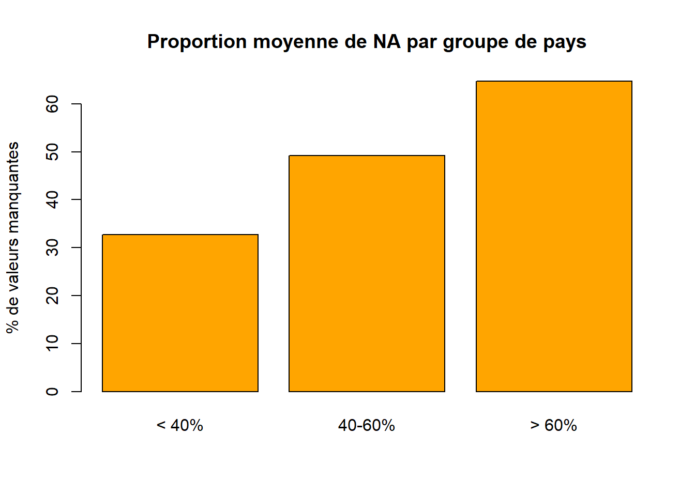
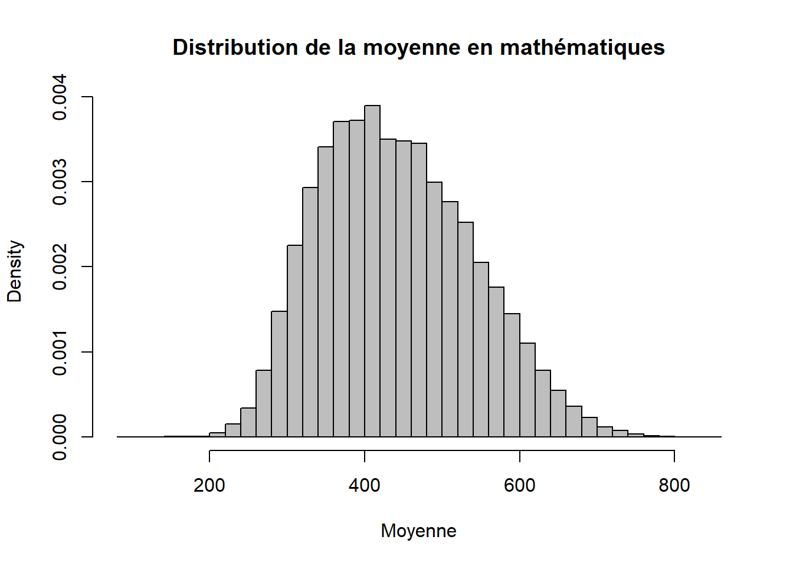
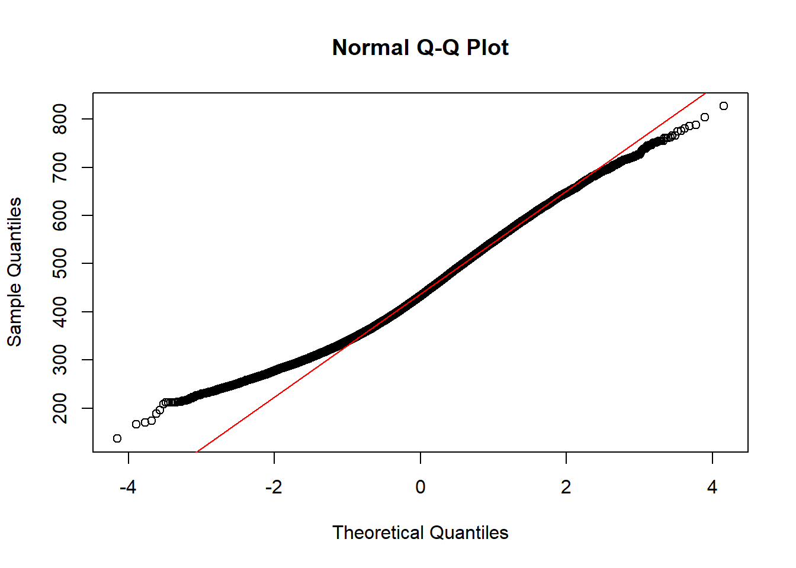
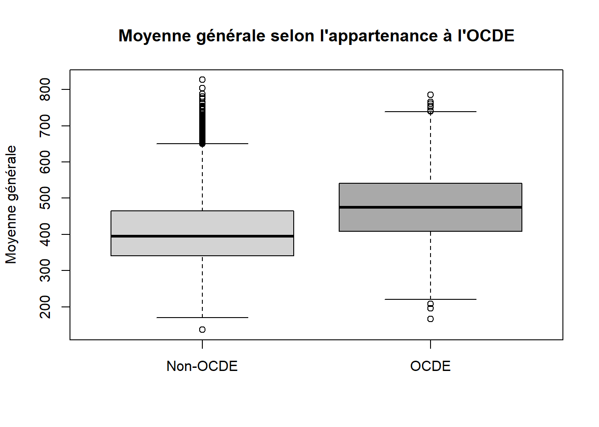

Par souci d’efficacité, le jeu de données contenant plus de 600.000 individus, nous élaborerons nos analyses exploratoires sur un échantillon de 5% de celui-ci.
On décide ici de dicerner plusieurs types de variables, notamment celles en lien direct avec l’enseignent, celles concernant les cours de mathématiques, celles concernant la créativité, et les autres.
On les conserve toute et on aura l’occasion de créer des jeux de données distincts selon les types de variables.
Recodons nos données pour rendre le dataframe plus clair à étudier.
Pour les variables de base :
data_ech_etude <- data_ech_etude %>%rename(Code_pays = CNT, # code du paysID_pays = CNTRYID, # identifiant du paysCode_centre_national = NatCen, # code du centre nationalStratum_ID = STRATUM, # identifiant de la strateCode_sous_region = SUBNATIO, # code de sous-régionRegion = REGION, # régionPays_OCDE = OECD, # pays OCDEMode_administration = ADMINMODE, # mode d’administrationLangue_questionnaire = LANGTEST_QQQ, # langue du questionnaire élèveLangue_evaluation = LANGTEST_COG, # langue de l’évaluationLangue_parent = LANGTEST_PAQ, # langue du questionnaire parentOption_pensee_creative = Option_CT, # option pensée créativeOption_litteratie_fin = Option_FL, # option littératie financièreOption_ICT = Option_ICTQ, # option questionnaire TICOption_bien_etre = Option_WBQ, # option bien-êtreOption_parent = Option_PQ, # option parentOption_enseignant = Option_TQ, # option enseignantOption_une_heure = Option_UH, # option une heureID_livret = BOOKID, # identifiant du livretNiveau_scolaire = ST001D01T, # niveau scolaireMois_naissance = ST003D02T, # mois de naissanceAnnee_naissance = ST003D03T, # année de naissanceGenre = ST004D01T # genre )
Pour les variables à intérêt dans notre étude (on précise en commentaire la question d’origine posée à l’élève) :
data_ech_etude <- data_ech_etude %>%rename(# Questions en lien direct avec l’enseignantenseignants_respectueux = ST267Q01JA, # The teachers at my school are respectful towards meenseignants_inquiets = ST267Q02JA, # If I walked into my classes upset, my teachers would be concerned about meenseignants_heureux_voir = ST267Q03JA, # If I came back to visit my school three years from now, my teachers would be excited to see meenseignants_intimidants = ST267Q04JA, # I feel intimidated by the teachers at my schoolenseignants_interesses = ST267Q05JA, # When my teachers ask how I am doing, they are really interested in my answerenseignants_amicaux = ST267Q06JA, # The teachers at my school are friendly towards meenseignants_bien_etre = ST267Q07JA, # The teachers at my school are interested in students' well-beingenseignants_mechants = ST267Q08JA, # The teachers at my school are mean towards me# Questions sur le cours de Mathématiquesmaths_pas_ecoute = ST273Q01JA, # Students do not listen to what the teacher saidmaths_attente_calme = ST273Q03JA, # The teacher has to wait a long time for students to quiet downmaths_interet_apprentissage = ST270Q01JA, # The teacher shows an interest in every student's learningmaths_aide_extra = ST270Q02JA, # The teacher gives extra help when students need itmaths_aide = ST270Q03JA, # The teacher helps students with their learningmaths_explique_tant_que_pas_compris = ST270Q04JA, # The teacher continues teaching until the students understandmaths_resoudre_sans_calcul = ST285Q01JA, # The teacher asked us to solve mathematics problems without computing anythingmaths_expliquer_solution = ST285Q02JA, # The teacher asked us to explain how we solved a mathematics problemmaths_expliquer_hypotheses = ST285Q03JA, # The teacher asked us to explain what assumptions we were making when solving a mathematics problemmaths_expliquer_raisonnement = ST285Q04JA, # The teacher asked us to explain our reasoning when solving a mathematics problemmaths_defendre_reponse = ST285Q05JA, # The teacher asked us to defend our answer to a mathematics problemmaths_relier_anciens_nouveaux = ST285Q06JA, # The teacher asked us to think about how new and old mathematics topics were relatedmaths_resoudre_autrement = ST285Q07JA, # The teacher encouraged us to think about how to solve mathematics problems in different ways than demonstrated in classmaths_persister = ST285Q08JA, # The teacher told us to keep trying even when we face difficulties with a mathematics taskmaths_memoriser = ST285Q09JA, # The teacher taught us to memorize rules and apply them to solve mathematics problemsmaths_problemes_quotidien = ST283Q01JA, # The teacher asked us to think of problems from everyday life that could be solved with new mathematics knowledge we learnedmaths_utilite = ST283Q02JA, # The teacher showed us how mathematics can be useful in our everyday livesmaths_penser_math = ST283Q03JA, # The teacher encouraged us to "think mathematically"maths_logique = ST283Q04JA, # The teacher taught us how to use mathematical logic when approaching new situationsmaths_simplifier_problemes = ST283Q05JA, # The teacher showed us how some problems that look difficult can be solved more easily by understanding how the number system is organizedmaths_decision = ST283Q06JA, # The teacher gave problems from everyday life involving numbers and asked us to make a decision about the situationmaths_relier_concepts = ST283Q07JA, # The teacher asked us how different topics are connected to a bigger mathematical ideamaths_penser_quotidien = ST283Q08JA, # The teacher encouraged us to think about how a problem from everyday life could be solved using mathematicsmaths_connexion_idees = ST283Q09JA, # The teacher explained how different mathematical ideas connect to a larger contextmaths_attention = ST293Q02JA, # I paid attention when my mathematics teacher was speaking# Questions sur la créativitécreativite_temps = ST335Q01JA, # My teachers give me enough time to come up with creative solutions on assignmentscreativite_valeur = ST335Q02JA, # My teachers value students’ creativitycreativite_originalite = ST335Q06JA, # My teachers encourage me to come up with original answers# Questions sur la COVID-19covid_lecons_video = ST351Q03JA, # Real-time lessons by a teacher from my school on a video communication programcovid_materiel_envoye = ST351Q05JA, # Learning material my teachers sent via email or platformcovid_lecons_enregistrees = ST351Q06JA, # Recorded lessons or other digital material provided by teachers from my schoolcovid_disponibilite_enseignant = ST354Q03JA, # My teachers were available when I needed helpcovid_preparation_enseignant = ST354Q08JA, # My teachers were well prepared to provide instruction remotely# Questions indirectesbruit_desordre = ST273Q02JA # There is noise and disorder )
Par ailleurs, les données de réponses aux questions sont décrites comme une echelle de 1 à 4 pour affirmer un total désacord, un désacord, un accord et un accord total. On aura l’occasion de transformes ces valeurs pour rendre le jeu plus clair, mais seulement après nos études préliminaires pour conserver la possibilité de calculer des statistiques de base (moyenne, mediane, EIQ…).
D’autre part, on ne possède aucune information sur les variables “CNTSCHID” “CNTSTUID” et “CYC” donc on se permet de les supprimer du jeu de données.
On ne remarque pas de gros problème au sein nos types de variables. On peut malgré tout convertir en facteur celles qui ne sont pas destinées à élaborer des calculs.
Etudions les valeurs manquantes selon le pays des individus étudiés afin de mieux nous préparer à l’analyse monovariée :
prop_NA_par_ligne <-rowMeans(is.na(data_ech))pct_NA_par_pays <-tapply(prop_NA_par_ligne, data_ech$CNT, mean) *100pct_NA_par_pays_tri <-sort(pct_NA_par_pays)barplot( pct_NA_par_pays_tri,las =2, col ="darkorange",main ="Proportion moyenne de NA par pays",ylab ="% de valeurs manquantes",cex.names =0.7)
Le nombre de pays étant important, on peut plus simplement regrouper les pays selon le pourcentage de possession de valeurs manquantes. On établit 3 groupes : le premier entre 0 et 40% de valeurs manquantes, le deuxième entre 40 et 60% et le dernier entre 60 et 100%.
barplot( pct_groupes,col ='orange',main ="Proportion moyenne de NA par groupe de pays",ylab ="% de valeurs manquantes")

On peut ainsi noter une grande quantité de valeurs manquantes qui nous pénalisera dans la suite de l’étude si on décide de simplement supprimer les données des étudiants qui ne répondent parfois pas à certaines question. On se proposera alors d’imputer les données par la moyenne.
Analyses univariées
Variable expliquée
Premièrement il peut être pertinent d’analyser séparément nos variables explicatives et notre variable expliquée. Ainsi on se concentre d’abord sur la réussite scolaire de l’élève, par le biais des notes de l’élève.
sum(is.na(Notes))
[1] 88640
On note que la variable qu’on cherche à expliquer se traduit par des notes dans différentes matières. Certaines notes sont vraissemblablement manquantes et l’on souligne 85600 valeurs manquantes sur 30687 élèves multipliés par 110 variables, soit (85600/(30687x110))x100 N.A en pourcentage.
(85600/(30687*110))*100
[1] 2.535868
On a donc 2.5% de valeurs manquantes, qu’on imputera pour le moment par la moyenne.
Etudions maintenant concrètement ces notes.
D’abord on distingue toutes les matières dans le dataframe suivant :
matieres <-c("MATH", #Mathématiques générales"READ", #Lecture"SCIE", #Science"MCCR", #Mathématiques : Changement et relation"MCQN", #Mathématiques : Quantitatif"MCSS", #Mathématiques : Espace et formes"MCUD", #Mathématiques : Incertitude et données"MPEM", #Mathématiques : Employer des concepts mathématiques, définitions et théorèmes"MPFS", #Mathématiques : Formuler des situations mathématiquement"MPIN", #Mathématiques : Interpréter, appliquer et analyser des sorties mathématiques"MPRE"#Mathématiques : Raisonnement)
On peut alors tracer par exemple l’histogramme représentant les moyennes en mathématiques :
hist( Notes_moyennes$MOY_MATH,breaks =30,freq =FALSE, col ="gray",main ="Distribution de la moyenne en mathématiques",xlab ="Moyenne")

On s’apperçoit que les moyennes des élèves semblent tendre vers une loi gaussienne. On pourrait par la suite effectuer des tests d’adéquation tels que la droite de Henry ou un QQ-plot.
qqnorm(Notes_moyennes$MOY_GENERALE)qqline(Notes_moyennes$MOY_GENERALE, col ="red")

Grâce à ces méthodes, on est capable d’identifier que la moyenne générale des élèves poursuit une distribution gaussienne.
Plus précisément et avant les analyses multivariées, on peut par curiosité regarder si certains pays influencent cette moyenne. On crée le dataframe ;
Le calcul des statistiques classiques nous permet de montrer que les élèves de Singapour et du Japon dominent les autres pays de part leur moyenne générale (en moyenne). En revanche ce sont le cambodge et la république dominicaine qui se montre avoir des moyennes générales (en moyenne) plus faibles. Notons par ailleurs que l’écart-type semble plus élevé pour les meilleurs pays. On peut émettre l’hypothèse que certains élèves tirent la moyenne vers le haut en étant extêmement efficaces dans leurs examens.
Maintenant, on se propose un bref apperçu de l’analyse de la moyenne générale selon l’appartenance au pays de l’OCDE.
boxplot( MOY_GENERALE ~ Pays_OCDE,data = df_Moy_pays,col =c("lightgray", "darkgray"),ylab ="Moyenne générale",xlab ="",main ="Moyenne générale selon l'appartenance à l'OCDE")

Graphiquement, les pays de l’OCDE montrent sur cet échantillon une moyenne générale plus élevée, avec une médiane à ~100 points de plus.
D’autre part et plus généralement, on s’intéresse à toutes les moyennes les unes entre les autres.
On note qu’elles semblent toutes corrélées les unes des autres. Cela fait sens car 8 moyennes de notes sur 11 sont des sous-parties des mathématiques et sont donc incluses dans la même matière. De plus on a une 9ème variable de pure moyenne de l’élève en mathématique. On aurait pu s’attendre à de tels résultats. A noter tout de même que les moyennes en mathématiques, en lecture et en sciences sont fortement corrélées.
Variables explicatives
Ensuite, on construit une boucle permettant d’étudier toutes les variables d’intérêt à notre guise à l’aide de diagrammes circulaires ;